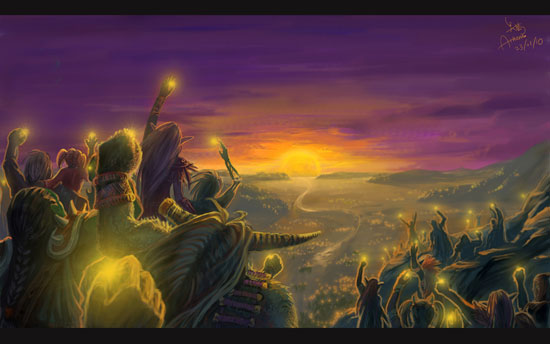

玩游戏的孩子，"男的都变小偷，女的都变三陪小姐".
但这一切，该怪谁呢？
所以2006年国内主流媒体因为日本公司抢注四大名著的事把中国游戏动漫公司拉出来大加批判时似乎忘了，这么多年来，是谁把这两个产业搞到这般田地的？是谁逼迫许多有热情的年轻人不得不去外国公司来实现自己的理想？是谁每天大肆攻击这些是不务正业误人子弟的？是谁说这些是毒品的？在他们把中国游戏动漫产业毁灭之后，现在又来攻击刚刚担负起产业复兴正艰苦摸索的人，他们有什么资格再来说三道四？他们有什么脸面再来批评别人？
现实的情况是，各种社会矛盾解决不了，严重降低了中国人的幸福指数，或者说增加了痛苦指数。个体家庭的压力不断增高，所有的忧虑与愤怒无法释放。在这个情况下，大众媒体依然乐此不疲地炒做电子海洛因对游戏产业来说相当危险，相关的电视节目中，家长早已经喊出了：“做游戏的都该枪毙！”这样的口号，如果说哪一天，众多家长跑到游戏公司打砸抢甚至搞出人命，应该算谁的呢？这些妖魔化游戏的报道算不算挑拨一部分群众仇恨另一部分群众？如果为此发生了暴力事件，谁该为此负责？怪家长？怪游戏公司？
中国游戏产业的特点就是在需要的时候总是会被人想起来，这也是我们需要WOW，劲舞团这些游戏站在最前方的原因。社会主流是不管游戏具体的区分，只是在需要找替罪羊的时候，找一款在线最多人气最旺的游戏出来顶罪就行了。因为他们解决不了70码，解决不了躲猫猫，解决不了十连跳，解决不了低工资，解决不了几千亿的三公，但他们可以解决掉游戏。中国游戏产业最大贡献不是交了多少税，而是在需要的时机被拿出来做各种社会问题的替罪羊。
好吧，我们就来说说低工资，都说什么都涨，惟独工资不涨，为什么？
原因很简单，虽然要求企业对员工的待遇必须提高，但对企业要求的各类税收一分不少，反而有增加之势，并且按照要求要把员工的待遇补齐。举个简单例子，公司给你开的工资是1500，要求公司上缴的员工福利最低标准是2200，那么虽然你的工资不到2200，但公司都要替你按2200的标准交上去。
在这个情况下，我们对惟独工资不涨的情况就不难理解了，也能明白为什么这几年民企大批倒闭。
大批民企倒闭，投资环境恶化，那么钱往哪里走最保险呢？还是有的。
比如说房地产。
我们对高居不下的房价一直不明白，甚至不理解。其实这个道理更简单：
房价高的相当一部分原因在于地价，而卖地是各地方政府的主要收入来源，大多占50%以上，有的甚至到70%或80%，所以我们会看到强制拆迁时都很有理，也该明白为什么最近几起抢拆导致被拆迁户主死亡的事件中，在场官员没有一个受到处罚，只有闹得满城风雨的唐福珍自焚案，在场指挥停职不到半年就重新上任了，回过头来还给已死的唐福珍扣了个法盲的帽子。
因为他们是按照地方政府的要求和法规执行拆迁的，他们没错。而这暴力拆迁屡屡发生，正是前面所说的原因，卖地是地方政府的主要收入来源甚至唯一收入来源，如果不依靠卖地，就无法保证我们每年保8的经济增长。但关于保8也是迫不得已，快不成，慢不得。有人曾将中国经济增长比喻成《生死时速》中装着炸弹的大巴士，速度低于50就爆炸。也就是说达不到保8的目标，中国经济就可能崩溃。
处在这样一个历史时期，许多事情都是迫不得已，个人有个人的难处，国家有国家的难处。作为一个游戏个体，玩家们在表达意见时更该找好角度与目标，而不是将一切不愿听到的都认为是敌人。
例如《网瘾战争》是段不错的视频节目，可惜制作者们局限在WOW玩家群体内，他们没有把自己放在全中国玩家的队伍里，而是将WOW玩家与其他游戏玩家彻底分离出来，孤军作战，因此他们也就丧失掉了众多其他玩家群体的支持。他们本可以赢得几十倍甚至上百倍于现在的支持者，但他们白白将这些盟友推掉了，导致本该引起更大规模轰动的视频不但传播途径减少，传播时间也缩短，这段视频也成了昙花一现，几乎没有什么寿命。

相比之下，我们来看看那个著名的骗子陶宏开，无论他怎么胡说八道，但他每一次都是站在全中国家长的立场上的（虽然他是美国国籍），这就是直接代表了一个阶层，立场鲜明，目标也就明确。他们明确到什么地步呢？无论陶宏开还是杨永信，指名道姓地攻击某一款网游远比其他时候多，因为戒网瘾机构已经成为了中国网络游戏市场的一部分，挂在产业链的末段，网络游戏市场如果垮了，这些机构也无钱可赚。
而《网瘾战争》的制造者们徒有制作技术，却在最根本的方面没有搞清楚，因此事倍功半。